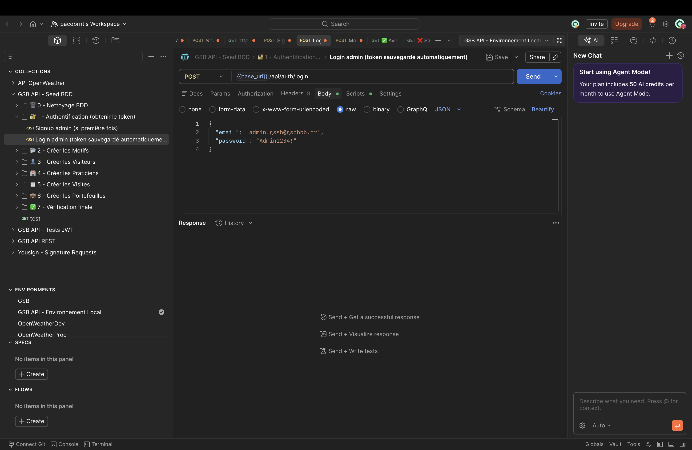

GSB est un projet en deux parties développé dans le cadre du BTS SIO. L'API REST sécurisée, développée en Node.js / TypeScript, gère les visiteurs médicaux, praticiens et visites avec une authentification par JWT.
L'application mobile Android (Java) se connecte à l'API via Retrofit et permet aux visiteurs de consulter leur portefeuille de praticiens et d'enregistrer leurs visites. L'API a été testée et documentée avec Postman.

Toutes les routes protégées de l'API requièrent un JWT token valide dans le header Authorization: Bearer <token>.
Si le token est absent, expiré ou invalide, l'API retourne immédiatement une erreur 401 Unauthorized et bloque l'accès à la ressource.
Les tokens sont générés à la connexion et signés avec une clé secrète côté serveur, garantissant qu'aucune donnée ne peut être falsifiée.